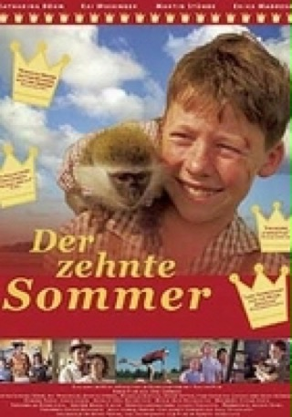

The Tenth Summer
In brief
An imaginative small-town boy has the summer of his life in 1960 Germany.
- Directed by
- Jörg Grünler
- Original title
- Der Zehnte Sommer
- Country
- Germany
- Year
- 2003
- Running time
- 98 minutes
- Language
- German
- Festival section
- Children's FilmFest
- Screenings
- Wed Oct 8, 4:30 PM, Rafael 2
Sat Oct 11, 2:30 PM, Sequoia 2
Source: Festival schedule (page 23 of the PDF): Wayback Machine copy; Poster from Filmweb